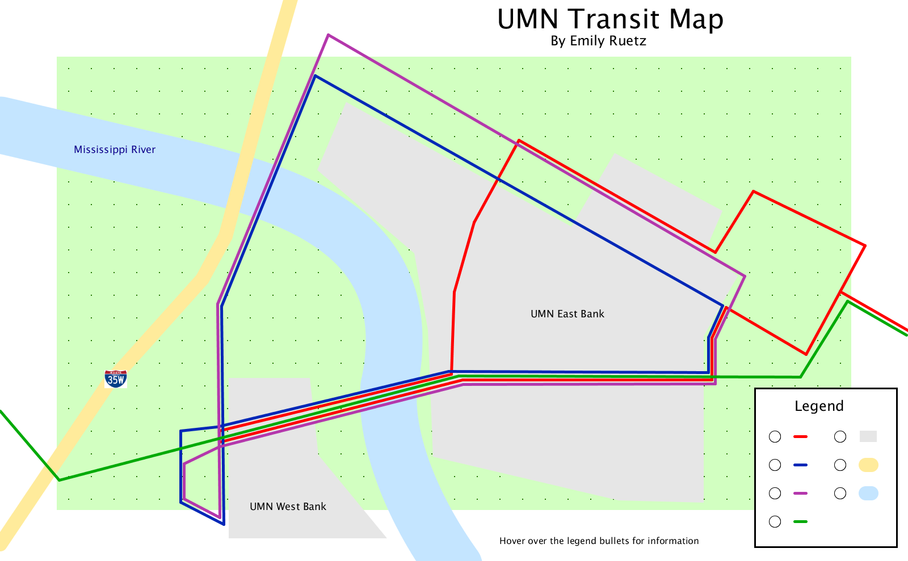
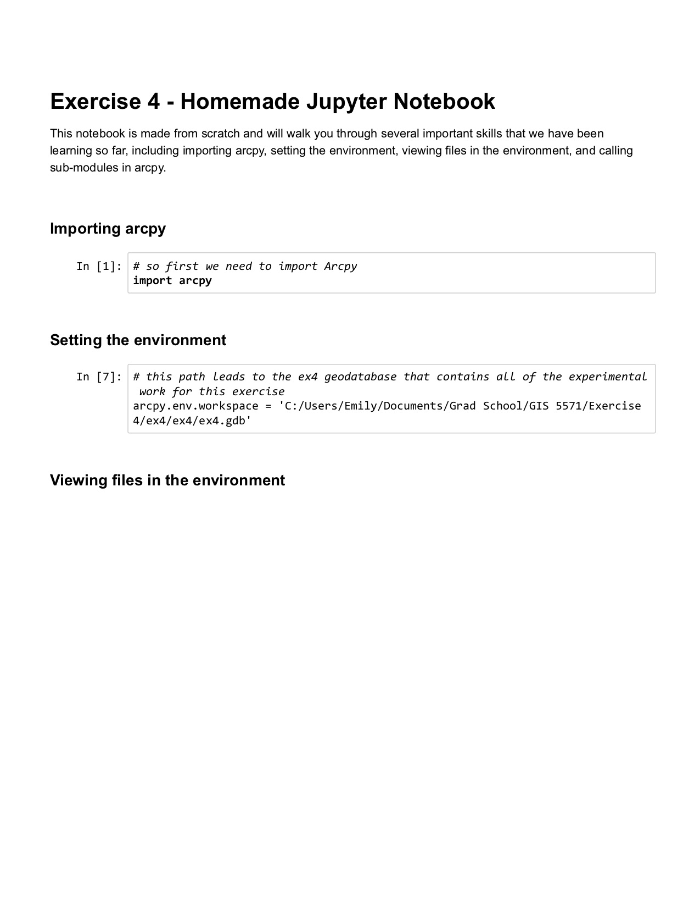
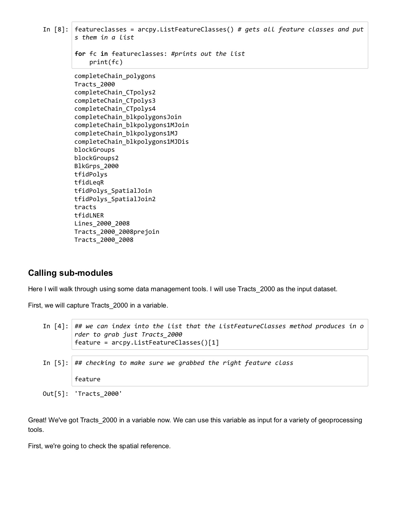
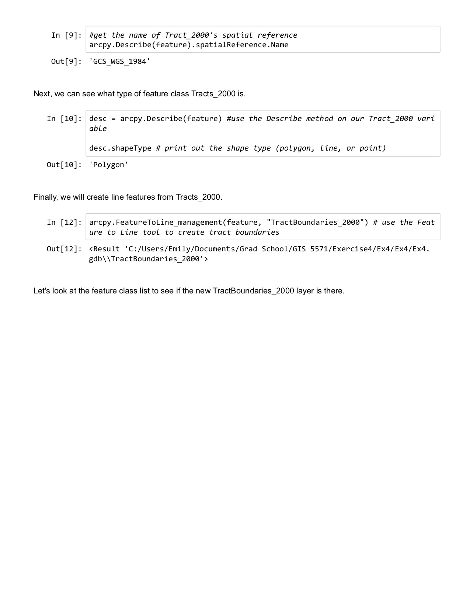
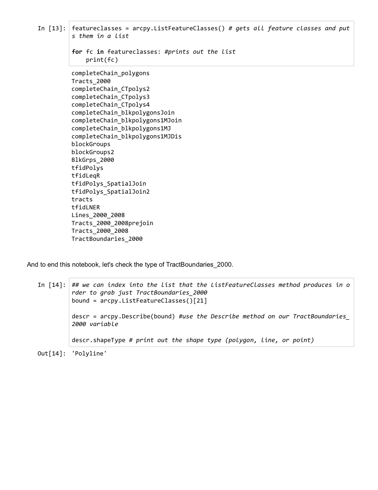

Portfolio
I produced this map as a part of my Geovisualization class this semester. The legend was designed to be interactive, so the user could hover their cursor over the circle and information about each route/legend item would pop up. This map was made using Processing, an open-source graphical library and IDE.
Skills:

My work for MnGeo includes updating datasets on the Minnesota Geospatial Commons. These are a few examples of datasets that I have worked with; I am listed as the metadata contact for these and other datasets.
As a part of my computer science degree, I did research and wrote an honors thesis. I developed an algorithm that gathered farmfields found in OpenStreetMap and exported them to a shapefile, and then ran a clustering analysis on the shapefile to discover how the location of farmfields are related to urban areas.
This Jupyter notebook was created from scratch as a part of an ArcGIS I exercise. It walks through how to set up, view files, and use a geoprocessing tool to create a new feature class.
Skills:
   